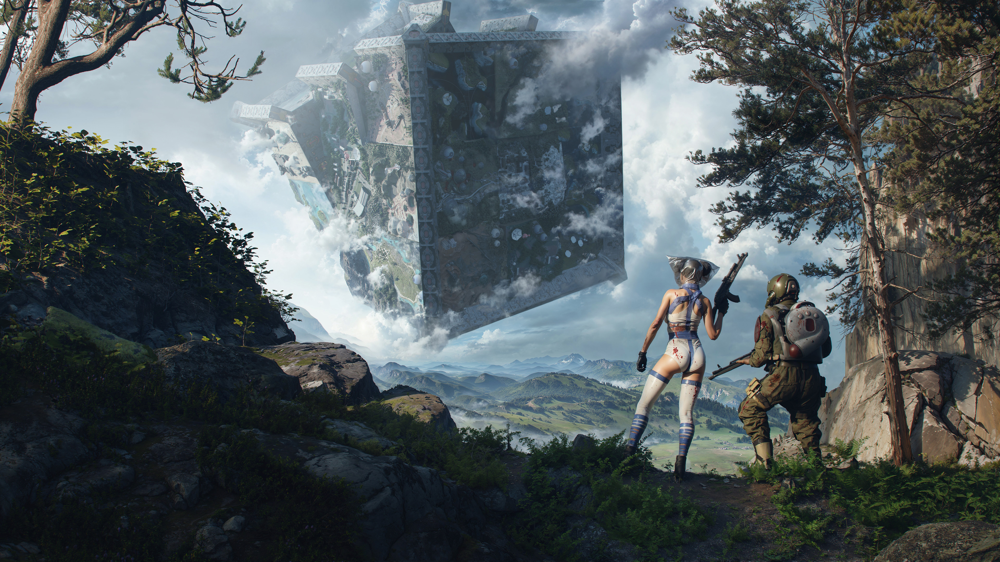

01 / MUNDFISH2024 — PRESENT
AI · BOSSES · WORLD INTERACTION
The CUBE
MMO RPG shooter · Atomic UniverseTECHNICAL GAME DESIGNER
From first prototype
to playtest-ready bosses.
I take ownership of AI features and bring them to life in Unreal Engine, working closely with design, programming, animation and VFX.
- Took several bosses from prototypes to working implementations through repeated playtest iterations.
- Built multiple enemy types, from simple mobs to complex boss-related systems.
- Implemented world-interaction systems that shape exploration and the flow through locations.
- Set up tools requested by other departments and documented the AI development pipeline.
Selected responsibilities only. Unreleased systems and internal materials remain confidential. Artwork is official project imagery, not a demonstration of a specific personal contribution.